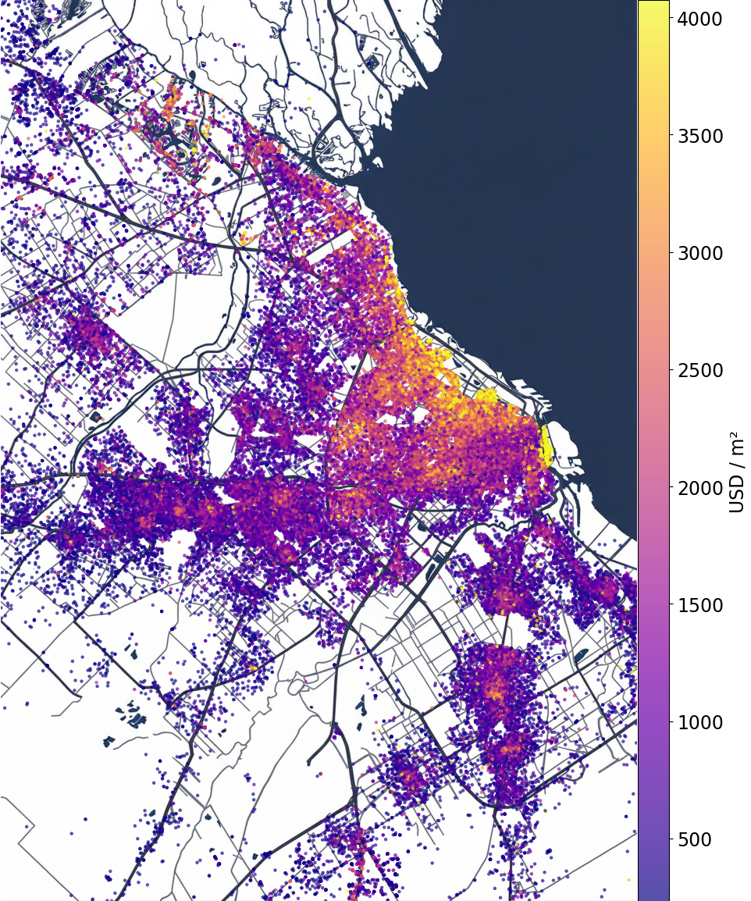
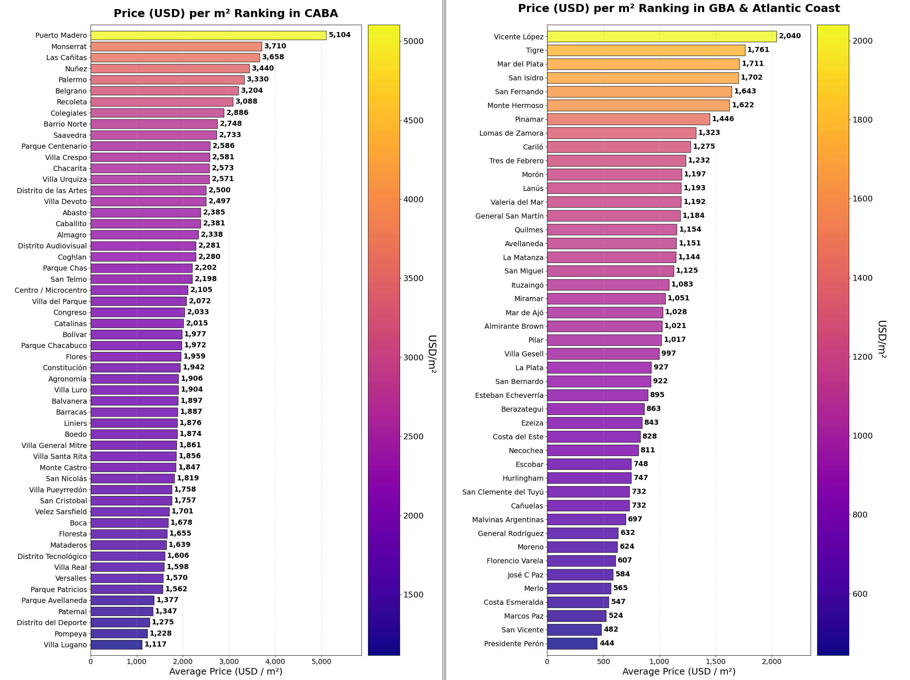
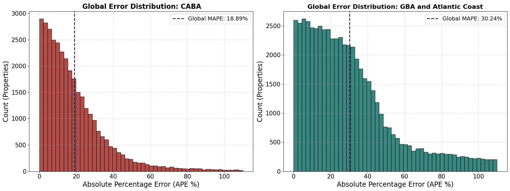

Project Overview
Searching for houses or apartments to buy or rent is always a headache. Every time we visit a web portal where these types of properties are shown, we can find everything: from properties with exorbitant prices that do not match the quality offered, to apartments with a price consistent with what is shown but outside our budget range, and even rare occasions of seeing excellent offers that require a lot of extra work.
For this reason, the main idea of this work was to collect information within a sales portal to study how different factors shown when categorizing a property can determine its price. These factors range from its location and size to the amenities the place may possess.
To achieve this, more than 200,000 unique properties distributed between the Ciudad Autónoma de Buenos Aires (CABA) and its surroundings were collected. A vast variety of data was gathered for each property, including: prices, total surface, covered and uncovered area, neighborhood/locality, different types of amenities reported by the user, the selling agency, exact location in many cases, seller descriptions, etc. In summary, enough information was collected to recreate the page, but with the purpose of obtaining data solely for this study.
Procedure and Summary of Results

One of the main statistics to value a property's price is its location and calculating its price per square meter (\(m^2\)). Throughout the world, there are places considered more or less expensive depending on a multitude of factors that go beyond this work. This image shows how these prices are distributed across CABA and its surroundings for the properties found in the dataset.
A first analysis allows evaluating the average price per \(m^2\) for the different neighborhoods, differentiating between CABA and outer areas.
If someone tried to estimate a property's price using only this metric, they would find that the margin of error is often enormous. While it is the first step in real estate appraisal, many other factors must be taken into account, such as the property's condition, the year it was built, and so on. Furthermore, the impact of these factors can vary significantly depending on the specific neighborhood or location.
In the image below, only the average values per \(m^2\) were calculated without taking into account any other factors such as uncovered land, amenities, etc. For this, a model was created that allows considering many of these factors.

Predictive Model
As expected, the value of a property does not only depend on where it is located and how many \(m^2\) it has. To make a much more precise estimation, one can use various factors that are usually provided by the user who publishes the property: if the apartment has uncovered land, a balcony, a terrace, if it has a garage or any other amenity; if the property has a certain level of seniority that can lead to wear and tear, as well as the current condition in which the property is found are some of the factors among others.
This model allows making a first-order estimation taking these factors into account and performing statistics in each of the neighborhoods independently. The equation of this model is the following:
This equation can be read in several blocks. The first considers the average value per \(m^2\) in each neighborhood and multiplies it by its covered, \(S_C\), and uncovered surface, \(S_U\) (which is considered slightly more expensive as long as there is covered land), penalizing those properties that do not have uncovered surface.
The second block takes into account several factors discussed before that can increase or decrease the price of a property. In the case of amenities (\(C_{\text{amenity}}\)), more than 50 possible characteristics were analyzed, each with a different weight. It was also seen how the year the property was built could affect the price (\(C_{\text{year}}\)), where there are cases in which properties up to more than 150 years old were analyzed. Finally, the current state reported by the seller was taken into account (\(C_{\text{condition}}\)). As expected, not all of these coefficients have to behave similarly in each neighborhood and will influence in different ways.
Finally, to verify the approximate error committed by the model, the Mean Absolute Percentage Error (MAPE) was calculated, showing that on average the error committed in each neighborhood is \(18.89\%\) for CABA and \(30.24\%\) for the surroundings. The image below shows a histogram with this distribution of errors. This value is more than satisfactory as it allows seeing business opportunities or fair prices in properties taking into account the factors seen before.

How to improve the project?
An interactive dashboard is currently in progress in which the user can see neighborhood by neighborhood the different properties with their characteristics and the comparison between the real and estimated price.
Despite having a large amount of data, when performing statistics for each neighborhood independently, it is always better to have a greater number of properties to analyze as they allow for a reduction in error.
Lastly, the possibility of improving the model by including or removing parameters to improve its estimation is always open.